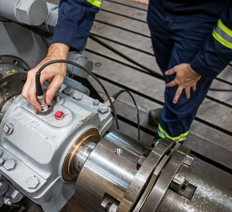

Engebø Horizon · OPUS ONE Operation
One operating surface for ramp-up, maintenance and agent-driven value
From application verticals to flow, agents and predictive operations — without adding complexity to what already works.
Pitch outline|v0.1|Nordic Mining · Engebø Rutile & Garnet
Situation
/ Why now
Ramp-up needs one operational nervous system
Engebø is showing published signs of progress, but the value lies in stabilising, learning and scaling faster — without increasing complexity.
91%
of design capacity reached in March 2026 — after a 13% rise in operational uptime through Q1.
60%
milling operating time in Q1 2026, up from 53% in Q4 2025.
39 yr
estimated mine life — a long runway for industrial learning and continuous improvement.
Today's key picture
01The first production year is defined by ramp-up, bottlenecks and a sharper focus on stability.
02The improvement plan has already lifted uptime and throughput; the next phase is mineral recovery and design performance.
03This is the right moment to make data, work processes and decisions agent-ready.
Goal — design capacity by year-end 2026
Engebø Horizon · OPUS ONE Operation
Nordic Mining Q1 2026 update · Annual Report 2025
02 / 13
Today's processes
/ The problem
Many verticals, a lot of manual bridging
When data and responsibility sit in system silos, people become the integration engine. That is what makes agents and automation hard.
SCADA / Historian
tags
alarms
trends
CMMS
work orders
faults
backlog
ERP / Procurement
inventory
orders
invoices
LIMS / Lab
samples
quality
recovery
Documents
manuals
drawings
procedures
Supplier
service
reports
warranty
Excel / Email
shift log
deviations
handover
People = integration engine
Copy data between systems
Interpret alarms manually
Search documents
Call the supplier
Re-key into CMMS / ERP
Rebuild every report
Consequence — every cross-system task depends on a person to find, interpret and re-enter the data. It is slow, error-prone, and impossible to scale or automate.
Engebø Horizon · OPUS ONE Operation
Illustrative — to be validated against Engebø's system landscape
03 / 13
Target picture
/ The solution
OPUS ONE: one layer across operations, maintenance and business
The project dissolves the application verticals by establishing a shared operating layer — without replacing what already works.
Existing systems — kept in place
SCADA / Historian
CMMS
ERP / inventory
LIMS / lab
DMS / docs
Supplier
Shift log
data in
↓
OPUS ONE — Operating layer
Semantic asset & process model
Event stream
Data contracts
Agent orchestration
Governance & audit
↓
work out
Operations shift
brief · handover · deviations
Maintenance
triage · work-pack · parts
Process / lab
recovery · tuning · simulation
Leadership
KPI · risk · decisions
The human approves. The agent finds, assembles, proposes and documents.
Engebø Horizon · OPUS ONE Operation
Agents integrated into work — not chat on the side
04 / 13
Agent-based operations
/ The human gain
Agents give time back on the floor
The first gain isn't an "autonomous plant". It's less friction in every shift log, every fault, every work order and every service clarification.

Simulated pilot gain
6,900
hours / year returned
50 roles × 3 hrs/week × 46 weeks.
Conservative against published field-service benchmarks of 7+ hours/week in low-value and admin work.
Where the hours come from — the agent loop
1Shift brief
assembled from the latest events
2Fault triage
with ranked suggestions
3Document retrieval
right manual, right revision
4Work-pack + parts
job ready before the wrench turns
5Service report
drafted as structured data
6Learning log
feeds the models for next time
Engebø Horizon · OPUS ONE Operation
Benchmarks: Salesforce · BCG · McKinsey field service — pilot to be calibrated locally
05 / 13
Production simulation
/ The prize
Small % gains on design capacity become big tonnes
OPUS ONE links simulation, bottlenecks and work orders so throughput and recovery measures can be prioritised by production impact.
Published ramp-up direction
Operating stability is the precondition for lifting recovery and volume.
Op. time milling → design throughput
Sensitivity at steady state
Design reference: ~35 kt rutile/yr · up to 200 kt garnet/yr
Throughput gain →
+2%
+5%
+8%
Extra rutiletonnes / year
+700
+1,750
+2,800
Extra garnettonnes / year
+4,000
+10,000
+16,000
Extra ore feedkt / year
+30
+75
+120
Use — simulate bottleneck changes, maintenance stops, WHIMS/dry-plant measures and recovery effect before they enter the plan.
Engebø Horizon · OPUS ONE Operation
Illustrative linear sensitivity — calibrate with mass balance, recovery & price
06 / 13
Maintenance
/ The climb
From better routines to predictive maintenance
Predictive maintenance needs structure first: the right tag, failure cause, spare part, inspection data and service history.
1Foundation
Stabilise the routines
PM plan, inspection rounds, cause codes and standard job plans.
2Data in work
Data quality, in the flow
Work orders auto-enriched with tag, alarm trend, documentation and parts.
3Condition-based
Condition-based operation
Vibration, temperature, process deviation and history linked to assets.
4Predictive
Predictive + service optimisation
Risk, recommended action, parts and supplier support proposed before stoppage.
30–50%
less machine downtime
18–31%
lower maintenance cost
The agent won't replace experts — it ensures experts get the full context before the job starts.
Engebø Horizon · OPUS ONE Operation
Benchmarks: McKinsey · IBM predictive maintenance
07 / 13
Cost logic
/ The saving
Lower service cost: more planned work, fewer emergency visits
Service costs fall when the team knows what's failing, which parts are needed and which documentation applies — before the supplier is called.
Agent-assisted service — one continuous thread
Fault history
→
Spare part
→
Manual
→
Remote assist
→
Standard report
Four levers that compound
Fewer rush jobs
Better triage and prioritisation up front.
Higher first-time-fix
Right part and procedure before the job.
Less overtime
Automatic planning and better capacity use.
Faster learning
Each service report becomes structured data.

Pilot target · 12 months
10–20%
lower external service cost & emergency purchasing on pilot assets
How — start with the top 20 critical assets and standardise the service workflow before scaling predictive modelling.
Engebø Horizon · OPUS ONE Operation
Benchmarks: BCG · McKinsey · IBM — local target to be validated
08 / 13
Next step · simulation
/ The loop
Test measures before they affect the plant
A digital twin / process model is most valuable when it is connected to decisions, work orders and operational approval.
↺ Continuous learning loop — results feed the next scenario
+1–3%
ABB / Boliden (Aitik) — throughput lift from digital twin + APC in grinding simulation.
BHP describes the digital twin as a test environment for scenarios before any real-world change.
Engebø Horizon · OPUS ONE Operation
Sources: ABB/Boliden case · BHP · McKinsey agentic AI
09 / 13
Delivery
/ The roadmap
90 days to pilot, 12 months to a scalable OPUS ONE
Not a big IT programme first. Start with the data- and workflow backbone, two agents and three measurable KPIs.
0–6 weeks
6–12 weeks
3–6 months
6–12 months
12 months +
Discovery + data map
Tag/asset hierarchy, system landscape, process & maintenance flow, KPI baseline.
OPUS ONE spine
Data contracts, semantic model, source connections, governance and agent sandbox.
★ Pilot
2 pilot agents
Shift-brief agent + maintenance work-pack agent on critical assets.
Predictive foundation
Condition signals, failure modes, service learning loop and simulation in plan.
Scaling
More workflow agents, role-based control, goal-driven autonomy with human-in-the-loop.
Governing principle — every phase must deliver an operational KPI improvement, not just a technical milestone.
Engebø Horizon · OPUS ONE Operation
Delivery model based on recognised agentic-AI implementation principles
10 / 13
Pilot selection
/ Where to start
Where OPUS ONE delivers fast effect at Engebø
Pick two pilots that hit production, maintenance and human time. Start on critical assets and process areas, not the whole plant.
Pilot agent
What the agent does
KPI effect
Shift-brief agent
Collects latest alarms, stoppages, samples, work orders and open actions.
Handover time · fault focus · repeated deviations
Maintenance work-pack agent
Work order + manual + drawing + parts + risk assessment in one pack.
Wrench time · first-time-fix · emergency stops
Slurry / pump reliability agent
Trend + failure mode + service history for pumps and piping.
Planned stops · less damage · fewer callouts
Dry plant / WHIMS tuning agent
Links process data, lab/recovery and adjustment log to scenario proposals.
Throughput · recovery · stable quality
Spare-parts agent
Min/max, criticality, lead time and consumption tied to assets and backlog.
Lower expedited purchasing · less waiting
Leadership KPI agent
Daily production, maintenance and risk narrative with data-source traceability.
Faster decisions · better prioritisation
Recommendation Start with shift-brief + maintenance work-pack in the same asset area.
Engebø Horizon · OPUS ONE Operation
Derived from published ramp-up focus areas
11 / 13
The decision
/ The ask
Establish OPUS ONE as a 90-day pilot
Start narrow enough to deliver fast impact — but build the right backbone so agents, simulation and predictive maintenance can scale.
1
Choose 2 pilot workflows
Shift brief + maintenance work-pack on a critical asset area.
2
Set 3 KPI baselines
Hours saved · operating time / throughput · service & emergency cost.
3
Appoint owners
Operations, maintenance, IT/data, process/metallurgy and finance.
The OPUS ONE principle
No new silo.
One operating layer that makes existing systems agent-ready.
Engebø Horizon · OPUS ONE Operation
Regulatory / commercial conditions handled as a separate risk track
12 / 13
Appendix
/ Sources & assumptions
Sources and assumptions behind the numbers
The figures are benchmarks and sensitivity simulations — to be calibrated against actual mass balance, recovery, cost base, system landscape and maintenance data.
Engebø-specific sources
01Nordic Mining — Engebø Rutile & Garnet: project status, resource, products, offtakes.
02Engebø Rutile & Garnet Annual Report 2025 — ramp-up, 2025 production, bottlenecks, reliability.
03Nordic Mining Q1 2026 Production Update — 13% uptime rise, 91% design throughput in March.
04Nordic Mining Q1 2026 operational update — focus shifts to recovery, plant stability, cost control.
05Opening of Engebø mine — ~35 kt rutile/yr and up to 200 kt garnet/yr after ramp-up.
06Hatch Engebø project page — 1.5 Mt ore/yr, 40-year mine life and project highlights.
Benchmarks / publications
01McKinsey predictive maintenance — 30–50% less downtime, 20–40% longer asset life.
02IBM predictive maintenance — 18–31% lower maintenance cost benchmark.
03BCG Field Service AI — 10–15% productivity and 10% effectiveness in field service.
04Salesforce field service survey — 7+ hrs/week in low-value/admin as a reference point.
05ABB/Boliden digital twin + APC at Aitik — 1–3% throughput improvement in grinding.
06McKinsey / Gartner agentic AI — agents must integrate into work processes and architecture.
Key assumption — June 2026 regulatory clarifications and the temporary discharge permit are not modelled in the benefit case. OPUS ONE addresses operational flow, traceability and decision quality — not the regulatory risk track itself. All financial figures are preliminary and should be validated with Engebø internal data before the business case is locked.
Engebø Horizon · OPUS ONE Operation
Preliminary — validate before locking the business case
13 / 13